深
THE BLACK SOUP / CASE FILES
选择一件尚未闭合的事
每个案件都有有限真相。你要做的不是猜中一句话，而是证明事件如何发生。
LOCAL ARCHIVE
NO API KEY
NO API KEY
存档与版本 v0.9 SENSORY GOLD
存档仅保存在这台设备。导出包不含真相图或证明证书。
CASE 01OPEN
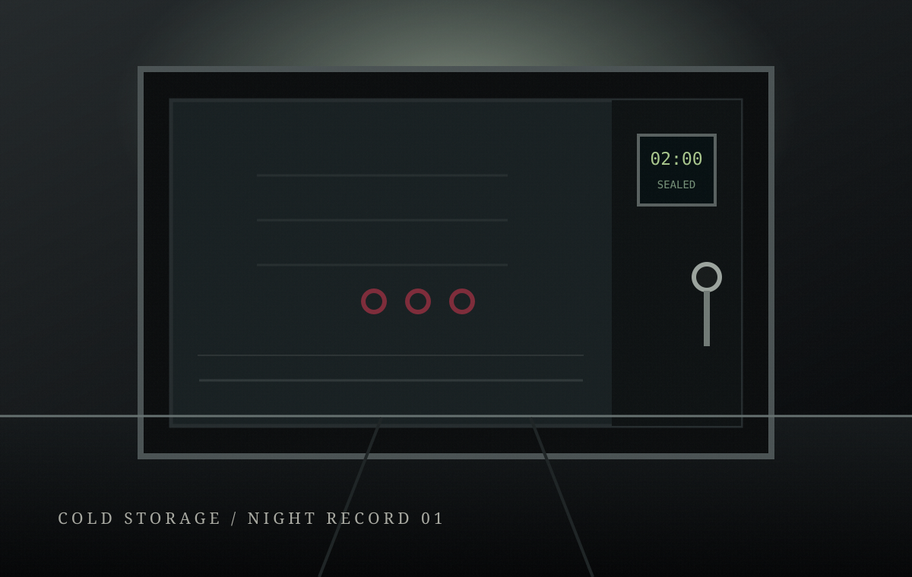
INTRO · 5–15 MIN
冷藏室的敲门声
门从里面锁着，监控却显示人早已离开。
打开档案 ↗
CASE 02OPEN
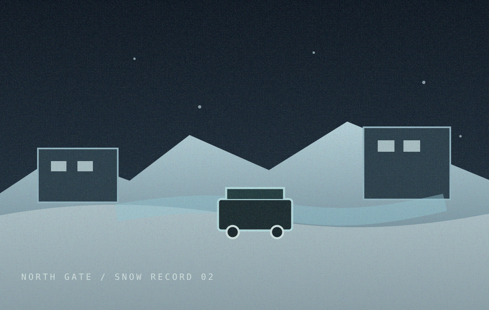
INTERMEDIATE · 8–18 MIN
没有脚印的回家路
门在午夜打开，雪面却没有一枚新脚印。
打开档案 ↗
CASE 03OPEN
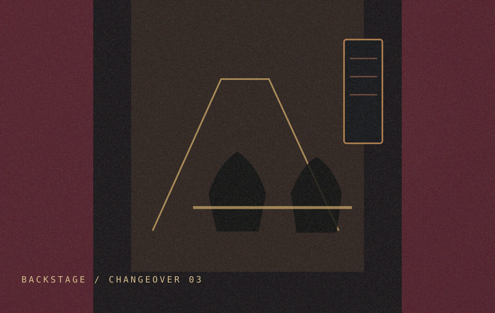
INTERMEDIATE · 8–20 MIN
十二点的第二个影子
证人说同一个演员在午夜出现了两个影子。
打开档案 ↗
CASE 04OPEN
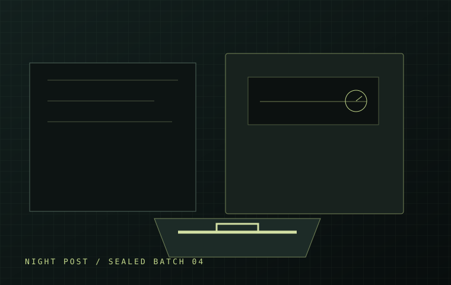
INTERMEDIATE · 8–18 MIN
寄不到的回信
邮袋还没有离开邮局，里面的回信却盖着明天的邮戳。
打开档案 ↗
CASE 05OPEN
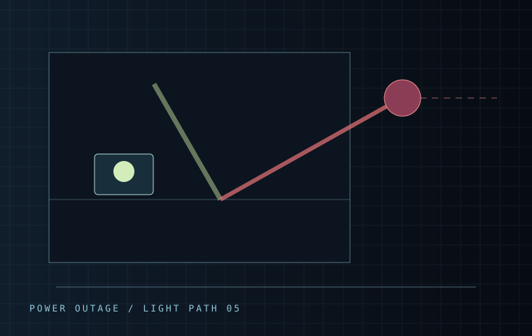
INTERMEDIATE · 8–18 MIN
第三盏未接通的灯
停电后，仓库里出现了第三盏亮着的灯；线路图却只允许两盏。
打开档案 ↗
CASE 06OPEN
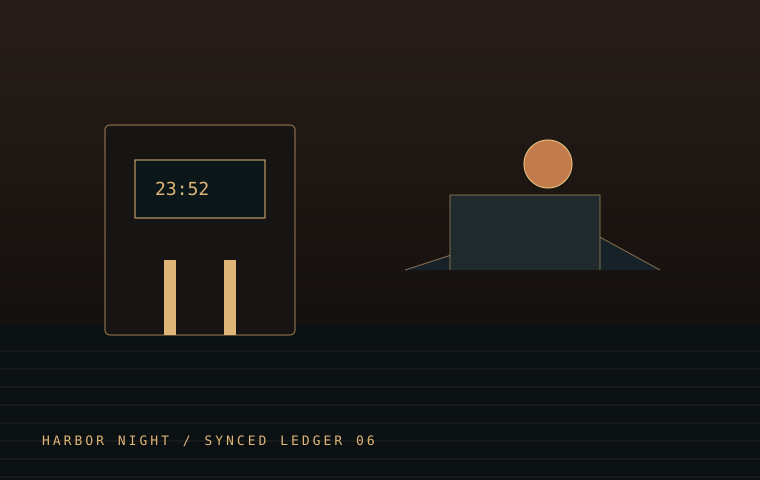
ADVANCED · 10–22 MIN
一张不存在的船票
渡轮已经离港，闸机记录却显示一张不存在的船票在23:52被使用。
打开档案 ↗
CASE 07OPEN
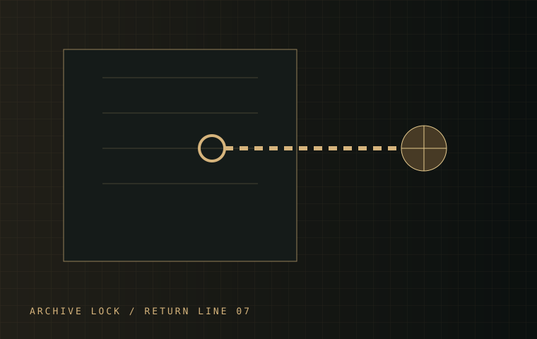
ADVANCED · 10–22 MIN
会自己归位的钥匙
锁柜没有被打开，钥匙却在维修结束后回到了原来的挂钩。
打开档案 ↗
CASE 08OPEN
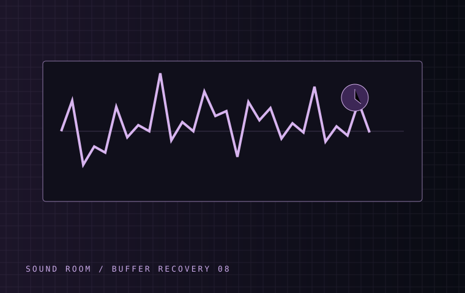
ADVANCED · 10–22 MIN
没有人签收的录音
录音在房间无人时被听见，文件却像刚刚有人交付。
打开档案 ↗
CASE 09OPEN
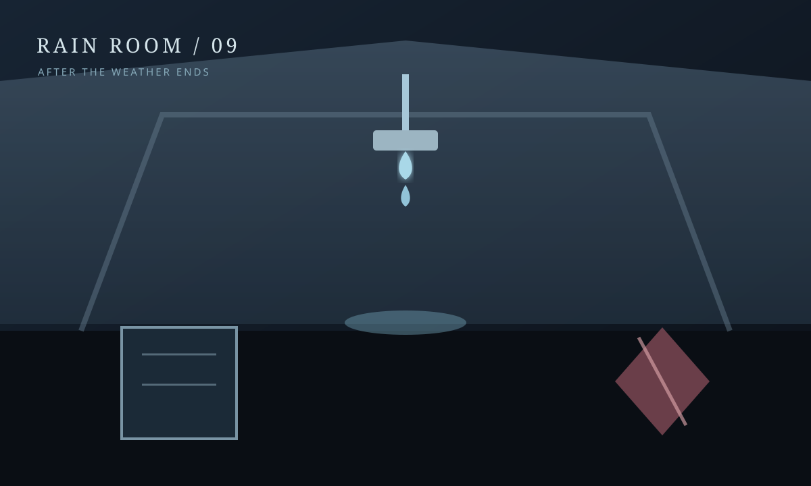
ADVANCED · 10–22 MIN
雨停后仍在滴水的房间
雨已经停了，房间里却在22:18继续滴水；屋顶没有新的漏点。
打开档案 ↗
CASE 10OPEN
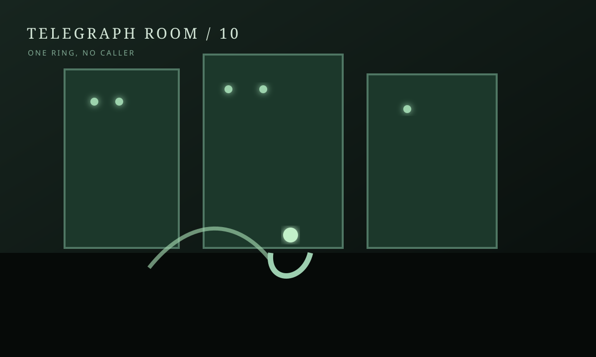
ADVANCED · 10–22 MIN
只响了一次的电话
外部电话线已经断开，23:00却只响了一次。
打开档案 ↗
CASE 11OPEN
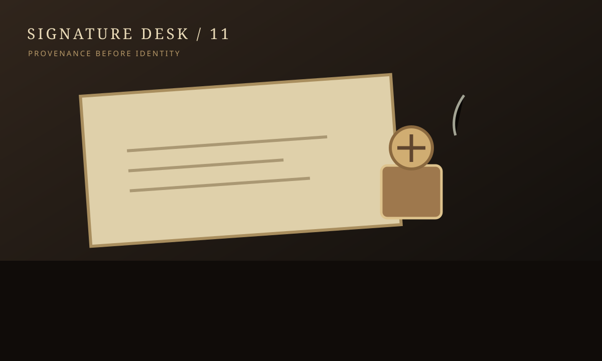
ADVANCED · 10–22 MIN
借来的签名
合同上的签名在魏宁到场前就已经出现。
打开档案 ↗
CASE 12OPEN
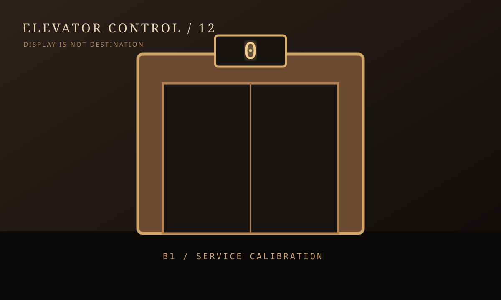
ADVANCED · 10–22 MIN
没有终点的电梯
显示屏出现大楼不存在的“0层”，门却在B1打开。
打开档案 ↗